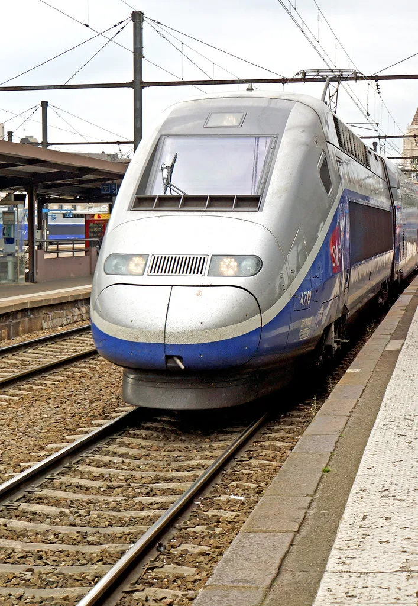
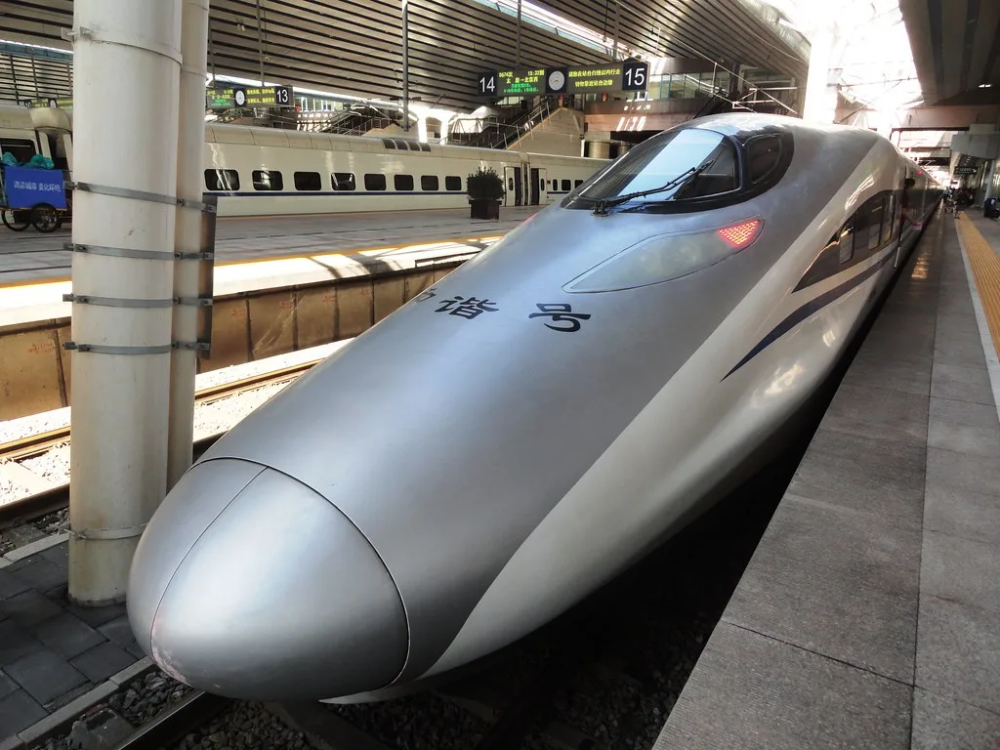

추석 열차표 예매 마감…KTX 92.7%·전체 84% 좌석 찼다
다가오는 추석 연휴를 앞두고 진행된 열차 승차권 예매가 마무리되면서, 전체 공급 좌석의 84%가 이미 예약을 마친 것으로 나타났다. 한국철도공사(코레일)에 따르면 지난 3일부터 11일까지 7일간 진행된 이번 추석 승차권 예매에서 KTX는 147만9000매가 팔려나가며 92.7%의 예매율을 기록했다. 반면 무궁화호 등 일반열차는 32만1000매가 예약돼 58.6%의 예매율에 그치며, 고속열차에 수요가 집중되는 흐름이 이번에도 재확인됐다.
이번 예매는 특히 의미가 남다르다. KTX와 SRT를 운영해 온 코레일과 에스알(SR)이 통합되면서, 올해 처음으로 두 열차의 승차권을 하나의 애플리케이션인 '코레일+'에서 한 번에 예매할 수 있게 됐기 때문이다. 그동안 명절마다 코레일톡과 SRT 애플리케이션을 각각 따로 켜고 예매 전쟁을 치러야 했던 이용객들의 불편이 이번 추석부터는 상당 부분 해소된 셈이다. 국토교통부와 코레일, SR은 지난 9월 1일부터 운행하는 통합 열차 승차권을 이 통합 앱에서만 예매하도록 하고, 기존 회원들에게는 사전에 통합 회원 전환을 안내해왔다.

노선별 예매율을 보면 지역별 귀성 수요의 편차가 뚜렷하게 드러난다. 경전선이 94.2%로 가장 높은 예매율을 보였고, 경부선이 91.3%, 전라선이 90.6%로 뒤를 이었다. 이어 호남선이 87.9%, 동해선이 81.4%를 기록했으며, 강릉선은 70.9%로 상대적으로 여유가 있는 것으로 나타났다. 수도권에서 남부 지방을 잇는 주요 간선 노선일수록 예매 경쟁이 치열했던 것으로 풀이된다.
날짜별로는 추석 당일인 9월 25일 예매율이 90.1%로 가장 높게 집계됐다. 귀성길인 하행선의 경우 연휴 전날인 9월 23일 예매율이 100.7%로 사실상 매진에 가까운 수준을 기록했고, 귀경길인 상행선은 연휴 마지막 날인 9월 27일이 98.1%로 가장 붐빈 것으로 나타났다. 연휴 기간 이동이 특정 날짜에 몰리는 전형적인 명절 패턴이 이번에도 그대로 재현된 모습이다.

예매 기간 내 승차권을 구하지 못한 이용객들을 위한 잔여석 판매도 이미 시작됐다. 코레일은 예매 마감일인 지난 11일 오후 3시부터 통합 앱 '코레일+'와 코레일 홈페이지, 각 역 창구 및 자동발매기를 통해 잔여석과 취소표 판매를 개시했다. 예약 부도나 개인 사정으로 인한 취소표가 수시로 나오는 만큼, 원하는 시간대의 표를 구하지 못한 경우 앱을 통한 실시간 확인이 유효한 방법으로 꼽힌다.
철도 업계 관계자들은 이번 추석이 통합 시스템 아래 치러지는 첫 명절 대이동인 만큼, 예매 과정에서의 혼선을 최소화하는 데 주력했다고 설명한다. 다만 새로운 앱 환경에 익숙하지 않은 이용객들을 위한 안내가 여전히 중요한 과제로 남아 있다는 지적도 나온다. 연휴가 임박한 만큼 아직 승차권을 구하지 못한 귀성객이라면 잔여석 발생 시간대를 미리 파악해두고, 코레일+ 앱의 알림 기능 등을 적극 활용하는 것이 좋은 방법이 될 것으로 보인다. 특히 예매율이 상대적으로 낮았던 강릉선이나 동해선 등은 다른 노선에 비해 잔여석이 나올 가능성이 더 크다는 점도 참고할 만하다.